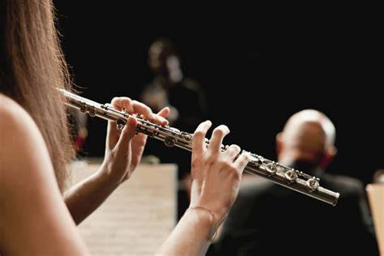

🎶✨ Instrumentos🎶✨
Cuando entre a la primaria aprendí a tocar la flauta transversal y un poco de piano.

Cuando recién entre a quinto de primaria llevaba una materia de música y solfeo, por lo que tuve que aprender a tocar la flauta transversal, la cual aún sigo practicando.
Instrumentos
Sinceramente cuando recién aprendía, se me dificultaba mucho adaptarme al nivel que ya tenían mis otros compañeros, no puedo decir que ahora soy muy buena, pero tengo muchísima más noción que en ese entonces. La verdad es que con el piano fue diferente, no lo practiqué tanto en la escuela, sino más por mi cuenta, está en mis planes retomar este hobbie, ya que la verdad me gusta mucho.